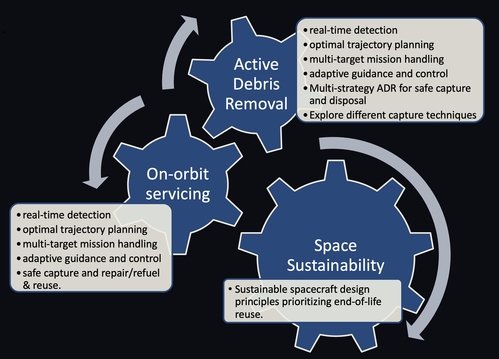

Space Autonomy Lab
About the Lab
Solving the space debris problem through autonomy
SSA Lab is an academic lab in the Grainger School of Engineering at UIUC. We focus primarily on solving the space debris problem by addressing critical challenges in missions with rendezvous and proximity operations.

Our work spans the entire lifecycle of in-orbit servicing missions — from preliminary trajectory design to real-time autonomous guidance during the final approach. We combine classical astrodynamics with modern AI techniques including reinforcement learning, control barrier functions, and convex optimization.
We collaborate with partners across academia and industry, including MIT, the Australian Centre for Field Robotics, Astroscale, and JPL, to push the boundaries of what's achievable in autonomous space operations.
Active Debris Removal
Real-time detection, optimal trajectory planning, multi-target missions, adaptive guidance, multi-strategy ADR for safe capture and disposal.
On-Orbit Servicing
Real-time detection, trajectory planning, multi-target handling, adaptive guidance, safe capture and repair, refuel, and reuse.